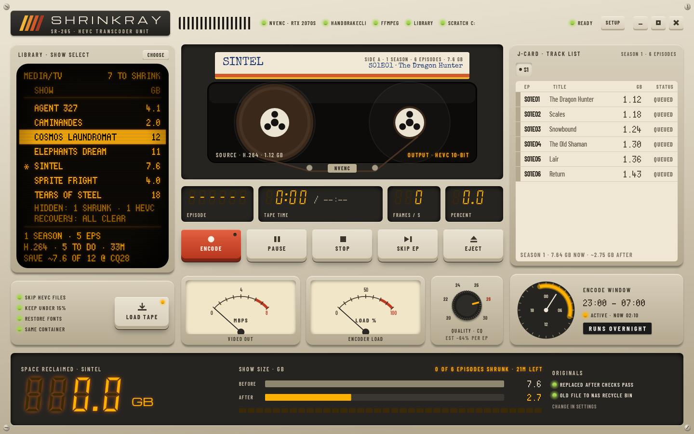
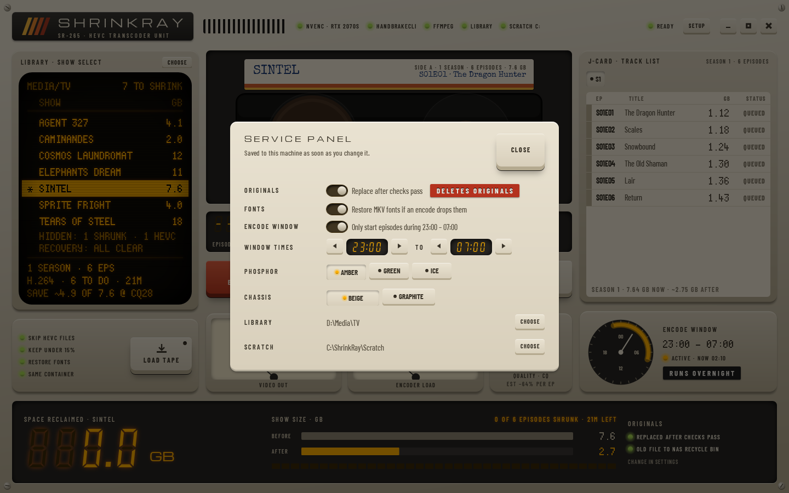

Shrink a Plex TV library to HEVC, one show at a time.
ShrinkRay re-encodes the H.264 shows you have already watched to H.265 on an NVIDIA card, then swaps each new file in under its original name. Plex keeps the metadata and the watch history. The original stays put until its replacement passes every check.
In development · Windows 10 and 11 · NVIDIA HEVC NVENC

Each capture comes from the app itself. The switches change the deck and this page with it.
Why it exists
Jacob's Plex TV library sits on a Synology NAS, and most of it is H.264 from shows he has already watched. On his RTX 2070 SUPER, HEVC keeps those shows watchable and frees most of their space.
It works on a live library, so it guards the delete.
- Same filename, same container.An .mkv stays an .mkv under the name Plex already knows, so metadata and watch history carry over.
- Checked before it replaces anything.Duration, stream counts, a full decode and at least 15% saved. Fail one and the original stays.
- Local work, then one swap.Copies, encodes and checks happen in a local scratch folder. The share receives only a finished file.
- Old files go to the recycle bin.The final delete lands in the NAS recycle bin, so you can still pull an original back.
How hard to squeeze
NVENC's constant quality setting, CQ, decides the trade: lower numbers keep more detail and save less. A wrong default wastes space or spoils shows, so the default came from a test.
Jacob cut four 3-minute clips from mid-season episodes and encoded each at CQ 22, 25 and 28 with HandBrakeCLI 1.11.2 (nvenc_h265_10bit, preset slowest). Audio and subtitles were copied, so the sizes below are real file sizes. VMAF scored every third frame against the source.
The clips, and why each one
Drag across the frame, or focus it and use the arrow keys. The source sits on the left of the line and the encode on the right. Frames are 960 × 540 crops from the centre of each 1080p frame, shown 1:1.
Size and quality
Saved is the clip's file size against the source clip, audio and subtitles included. VMAF runs from 0 to 100, and above about 93 a TV viewer can't tell the encode from the source. Low is the worst sampled frame. The highlighted column is the default.
At 2×, the cost is texture
Zoomed in, CQ 28 smooths skin pores and background grain more than CQ 25. At 1:1 on a TV you have to hunt for it. No setting showed banding or blocking. These crops follow the clip picked above.
The decision
Every clip shrank 60 to 70% at CQ 28 and kept a mean VMAF above 95. For a show you care about more, turn the quality knob on the deck; ShrinkRay saves it as a per-show override, such as CQ 25.
- Source bitrate predicts savings better than content does.The 14 Mbps live-action clip saved the most at every setting. The 5 Mbps studio show saved the least.
- CQ 22 barely pays on a modest source.It saved 14 to 19% on the two leaner clips, right at the 15% line where ShrinkRay keeps the original. That rule earns its place.
- Worst frames dip to VMAF 78 to 85 at CQ 28.They sit on cuts and fades. If a show ever looks off, look there first.
- CQ doesn't change speed.All three settings ran at about 165 fps. A 30-minute episode takes about 4.5 minutes, and one night covers about 100 episodes.
- HandBrake 1.11.2 keeps MKV font attachments.The anime clip had 8 fonts before and 8 after, so the planned font-restore step became a fallback.
How it keeps your library safe
Each episode moves through a fixed order. A journal writes every state to disk before the step it names, and on startup, recovery reads the last entry and the disk to settle whatever a crash left.
Verify before you trust
- Duration within a second of the original
- The same number of video, audio and subtitle streams
- A full decode with no errors
- HEVC on the output
- At least 15% smaller
The first real episode failed the stream count. HandBrake had turned captions embedded in the video into an extra subtitle track, the check caught the mismatch, and the original never moved.
After a crash
- Before the upload
- The share never changed. Recovery marks the episode and leaves the library alone.
- Temp file uploaded
- Recovery deletes the temp file. The original never moved.
- Original renamed aside
- If the new file already sits at the original name and passes its check, recovery finishes the swap. Otherwise it renames the original back.
- Anything else
- When the disk matches no known state, recovery reports it for review and changes nothing.
The crash tests kill the swap after every durable step, and again during recovery. Pause suspends HandBrakeCLI mid-frame. Skip and Stop write a Cancelled entry, allowed only before the original is renamed, so a stopped episode stays queued for next time.
Design
Cassette futurism: 1980s consumer hardware drawn as a working machine. Jacob picked it from several directions and said he would rather take it too far and pull back.
A tape deck fits the job. You load one show the way you load one cassette, the episodes become its track list, and the meters report numbers you would want during an overnight encode anyway. Each part on the panel maps to something the engine does.
The metaphor, part by part

- CRT monitorThe library, one line per show with H.264 left to shrink.
- CassetteThe show in the deck. Its label gets typed the moment you load it.
- J-cardThe track list: every episode with its size and status.
- Piano keysThe transport. Encode is the only red key.
- VU metersOutput bitrate and NVENC load, both real readings.
- Quality knobCQ for the show in the deck, saved per show.
- Encode windowThe hours an episode may start, overnight by default.
- Tape counterSpace reclaimed on this show, in gigabytes.
House rules
- Phosphor is the only light.Screens, digits and live readouts glow. Chassis, keys and labels never do.
- Red means encode or delete.Signal red marks the Encode key and anything that deletes, and appears nowhere else, on this page included.
- Every lamp pairs with a word.A lamp never carries meaning by color alone, so each one sits next to its label.
- Only real moving parts move.Reels, needles, lamps and keys animate. Turn off animations in Windows and they hold still.
What got pulled back
- CutA shelf of finished showsThe deck handles one show at a time. A shelf of done work pulled attention away from it.
- CutA Lift Cover button guarding deleteObnoxious by the tenth press. Replacing originals became a setting with a red tag that says so.
- CutAn FPS scopeIt pulled the eye from the tape deck. Frames per second stayed as a plain readout.
- CutA STATE column on the monitorShows with nothing left to do now hide, and one line at the bottom counts them.

Type
Silkscreen labels run uppercase at 600 or 700, tracked about +18%, as if printed on the panel.
A bitmap font drawn on an 11 px grid, set at exactly 22 px so each font pixel covers 2 × 2 screen pixels. Its G reads like a 6, so GB moved into the column headers.
It replaced Permanent Marker, which read as Sharpie scrawl on a machine this tidy.
Themes
Amber, green or ice phosphor on a beige or graphite chassis, all switching live in the app. Graphite needed its own printed inks: dark ink on dark plastic failed contrast, so the silkscreen lifts until it clears WCAG, and a unit test checks every ink on both chassis. Pick one to switch this page.
From boards to parts to the app
- Design boardsA canvas with boards for the main deck, the tray, a boot self-test, a pre-scan printout and the component kit.
- A control kitA WPF kit of reels, meters, keys, lamps and readouts, with its own gallery app to check every state.
- The appBuilt from those parts. Reel packs, needle angles, knob detents and segment shapes live in plain classes with unit tests.

The component gallery, rendered from the kit. Run it with dotnet run --project src/ShrinkRay.Gallery.
Install
Today: build it from source
ShrinkRay has no release yet. Clone the repository and run the install script. It publishes a Release build to your user profile and adds a Start menu shortcut. Run it again after you pull to pick up changes.
# PowerShell
git clone https://github.com/JacobPoteet/ShrinkRay.git
cd ShrinkRay
powershell -ExecutionPolicy Bypass -File tools/install-local.ps1
The script refuses while ShrinkRay is running, since an encode may be mid-swap, and never touches your settings or the journal.
At 1.0: a release
Once 1.0 ships, a build will wait on the releases page and this section will link it.
You need
- Windows 10 or 11
- An NVIDIA GPU with HEVC NVENC
- The .NET 8 SDK or later, to build
- HandBrakeCLI and ffmpeg. A winget install of HandBrakeCLI works; ShrinkRay finds it in winget's package folder.
First run
Choose a library folder, local or on a mapped share, and a local scratch folder. Load a show, check the estimate on the monitor, and press Encode.